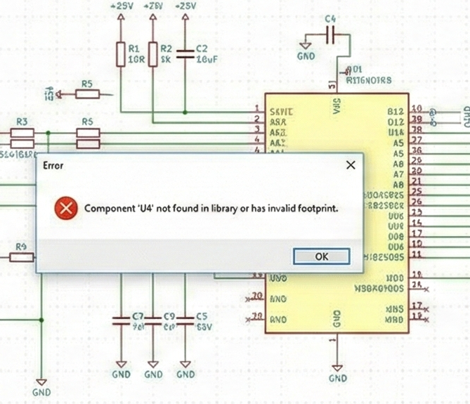

How to Control Your KiCad Library
Many engineering teams use KiCad for PCB design but struggle to maintain a clean, consistent, and reliable component library.
Symbols and footprints often drift over time, parameters become inconsistent, and duplicated parts accumulate across multiple projects.
This page explains the common problems, the characteristics of a well-controlled KiCad library, and how St. Croix Circuits provides a structured solution.

Why KiCad Library Control Matters

A well-managed library is essential for reliable design work.
Uncontrolled libraries lead to errors during schematic capture,
mismatched footprints during layout, and unpredictable manufacturing results.
Teams often lose time rebuilding components,
tracking down inconsistencies, or debugging preventable issues caused by outdated or incorrect library parts.
Good library management improves design quality, reduces risk, and increases engineering efficiency.